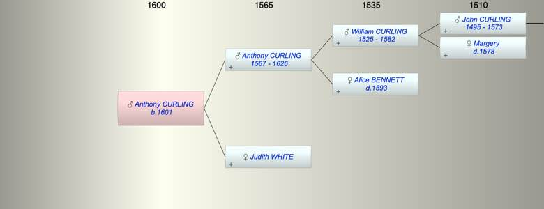

| [Index] |
| Anthony CURLING (1601 - ) |
|  |
| b. 1601 at St Peter, Thanet |
| Parents: |
| Anthony CURLING (1567 - 1626) |
| Judith WHITE |
| Siblings (4): |
| John CURLING (1594 - 1649) |
| William CURLING (1595 - 1646) |
| Joan CURLING (1597 - ) |
| Sybill CURLING (1599 - 1599) |
| Events in Anthony CURLING (1601 - )'s life | |||||
| Date | Age | Event | Place | Notes | Src |
| 1601 | Anthony CURLING was born | St Peter, Thanet | bap 24 May 1601 ex FMP PR | ||
| 1626 | 25 | Death of father Anthony CURLING (aged 59) | St Laurence | buried 10 Sep 1626 ex FMP PR | |
| Created on a Mac™ using iFamily for Mac™ on 8 Oct 2023 |